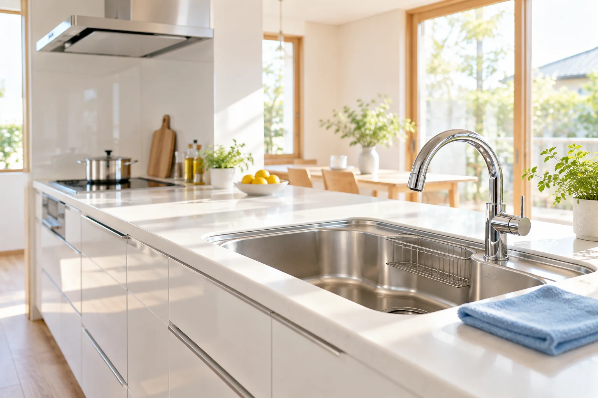

浴室
水アカやカビなど、日々のお掃除では落としにくい汚れに対応。
岡山県内のハウスクリーニング
浴室も、換気扇も、キッチンも。
隅々まで丁寧に。毎日が気持ちいい住まいへ。

こんなお悩み、ありませんか？
浴室のカビや水アカが
こすっても落ちない
換気扇の油汚れを
分解して掃除できない
引越し前後の清掃を
まとめてお願いしたい
忙しくて、家の掃除に
時間が取れない
料金や作業内容がわからない不安も、まずはご相談ください。
仕上がりはもちろん、わかりやすい説明と丁寧な対応を大切にしています。
SERVICE
専用洗剤と専門器具で、汚れや素材に合わせて清掃。
作業前に対象箇所と内容をご説明します。
水アカやカビなど、日々のお掃除では落としにくい汚れに対応。
頑固な油汚れも丁寧に。分解作業の可否は事前に確認します。
コンロの油汚れやシンクの水アカまで、素材に合わせて清掃。
毎日使う水回りを、細かな部分まで清潔で気持ちよい空間へ。
入居前や退去前の清掃に。空室は立ち会いなしでもご相談可能。
浴室と換気扇など、一度にご相談。個別に頼む手間を減らせます。
OUR PROMISE
汚れの種類と素材を確認し、適した方法で清掃します。
気になる箇所を伺い、細部まで一つずつ向き合います。
作業範囲と合計金額を、見積り時にご案内します。
ご希望に合わせ、必要な清掃を一緒に考えます。
鍵の受け渡しや仕上がり確認の方法を事前にご案内。
お住まいの地域とご希望日をお知らせください。
LIFE AFTER CLEANING
共働きや子育てで忙しい方も、ご家族に代わって依頼したい方も。
プロの清掃で、暮らしに少しのゆとりを。
HOW IT WORKS
電話・フォームで地域、希望箇所、希望日をお知らせください。
汚れの状態をお伺いします。写真があると相談がスムーズです。
作業範囲と合計金額をご案内します。
内容をご確認いただき、ご希望に合わせて調整します。
対象箇所と作業内容を確認してから、丁寧に清掃します。
清掃箇所をご確認いただき、お支払いへ。
PRICE
プロの清掃サービス
5,000円〜
料金は清掃箇所・広さ・汚れの状態・分解作業の有無で異なります。作業範囲と合計金額は見積り時に提示します。
追加作業が必要な場合は、事前にご説明します。セット料金やオプションは、ご希望の内容を伺ってご案内します。
FAQ
無料です。対象エリアや条件は、お問い合わせ時にご確認ください。
空き状況により最短即日でご案内します。ご希望の地域と清掃箇所をお知らせください。
空室は立ち会いなしでも相談可能です。鍵の受け渡しや仕上がり確認の方法を事前にご案内します。
清掃箇所と汚れの状態を確認したうえで、目安時間をお伝えします。
素材の劣化や汚れの染み込みにより、落としきれない場合があります。作業前に状態を確認し、ご説明します。
CONTACT
①お住まいの地域 ②清掃したい場所
③ご希望日 ④汚れの状態をお知らせください。